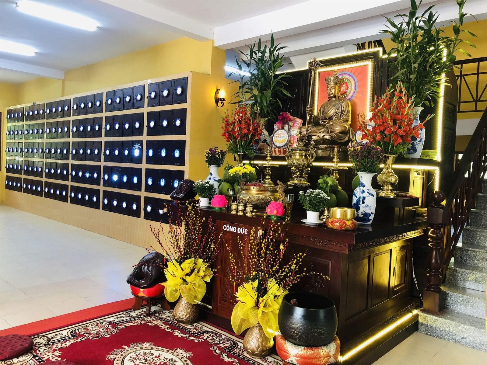

Vị trí cố định, thuận tiện thăm viếng
Tro cốt được lưu giữ tại vị trí đã lựa chọn và không tự ý di dời. Cách bố trí rõ ràng giúp thân nhân thuận tiện tìm đến đúng hộc lưu cốt để dâng hương, thăm viếng và tưởng nhớ người đã khuất.
Vị trí được ghi nhận trong hồ sơ bàn giao để gia đình có thể tìm lại thuận tiện trong những lần thăm viếng sau. Mọi thay đổi, nếu có, cần được thông báo và thống nhất theo quy định.